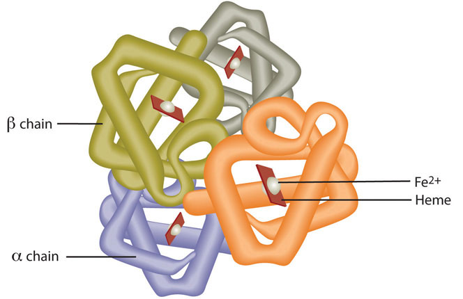

In a well-balanced diet, minerals are plentiful, and herbs are power-packed with minerals. Eat more plants, spice up your food, and drink herbal teas to obtain optimum mineral nutrition.
Magnesium is the eleventh most abundant element in the human body and is known to participate as a cofactor in hundreds of metabolic reactions. ATP exists as a complex with magnesium and therefore this mineral is involved in all reactions that synthesize or require ATP including carbohydrate, lipid, protein, RNA, and DNA synthesis. Many Americans do not get the recommended intake of magnesium from their diets. Some observational studies suggest mild magnesium deficiency is linked to increased risk for cardiovascular disease. Signs and symptoms of severe magnesium deficiency may include tremor, muscle spasms, loss of appetite, and nausea.
Red blood cells contain the oxygen-carrier protein hemoglobin. It is composed of four globular peptides, each containing a heme complex. In the center of each heme, lies iron (Figure 10.6). Iron is a key component of hundreds of metabolic enzymes. Many of the proteins of the electron-transport chain contain iron–sulfur clusters involved in the transfer of high-energy electrons and ultimately ATP synthesis. Iron is also involved in numerous metabolic reactions that take place mainly in the liver and detoxify harmful substances. Moreover, iron is required for DNA synthesis. The great majority of iron used in the body is that recycled from the continuous breakdown of red blood cells.
Figure 10.6
Hemoglobin is composed of four peptides. Each contains a heme group with iron in the center.
The iron in hemoglobin binds to oxygen in the capillaries of the lungs and transports it to cells where the oxygen is released (see Note 10.30 "Video 10.5"). If iron level is low hemoglobin is not synthesized in sufficient amounts and the oxygen-carrying capacity of red blood cells is reduced, resulting in anemia. When iron levels are low in the diet the small intestine more efficiently absorbs iron in an attempt to compensate for the low dietary intake, but this process cannot make up for the excessive loss of iron that occurs with chronic blood loss or low intake. When blood cells are decommissioned for use, the body recycles the iron back to the bone marrow where red blood cells are made. The body stores some iron in the bone marrow, liver, spleen, and skeletal muscle. A relatively small amount of iron is excreted when cells lining the small intestine and skin cells die and in blood loss, such as during menstrual bleeding. The lost iron must be replaced from dietary sources.
Oxygen Transport
(click to see video)Watch this video to view how hemoglobin in red blood cells transports oxygen to all cells in the body.
The bioavailability of iron is highly dependent on dietary sources. In animal-based foods about 60 percent of iron is bound to hemoglobin, and heme iron is more bioavailable than nonheme iron. The other 40 percent of iron in animal-based foods is nonheme, which is the only iron source in plant-based foods. Some plants contain chemicals (such as phytate, oxalates, tannins, and polyphenols) that inhibit iron absorption. Although, eating fruits and vegetables rich in vitamin C at the same time as iron-containing foods markedly increases iron absorption. A review in the American Journal of Clinical Nutrition reports that in developed countries iron bioavailability from mixed diets ranges between 14 and 18 percent, and that from vegetarian diets ranges between 5 and 12 percent.Centers for Disease Control and Prevention. “Iron and Iron Deficiency.” Accessed October 2, 2011. http://www.cdc.gov/nutrition/everyone/basics/vitamins/iron.html. Vegans are at higher risk for iron deficiency, but careful meal planning does prevent its development. Iron deficiency is the most common of all micronutrient deficiencies and will be explored in depth in Section 10.5 "Iron-Deficiency Anemia".
Zinc is a cofactor for over two hundred enzymes in the human body and plays a direct role in RNA, DNA, and protein synthesis. Zinc also is a cofactor for enzymes involved in energy metabolism. As the result of its prominent roles in anabolic and energy metabolism, a zinc deficiency in infants and children blunts growth. The reliance of growth on adequate dietary zinc was discovered in the early 1960s in the Middle East where adolescent nutritional dwarfism was linked to diets containing high amounts of phytate. Cereal grains and some vegetables contain chemicals, one being phytate, which blocks the absorption of zinc and other minerals in the gut. It is estimated that half of the world’s population has a zinc-deficient diet.Prasad, Ananda. “Zinc deficiency.” BMJ 2003 February 22; 326(7386): 409–410. doi: 10.1136/bmj.326.7386.409. Accessed October 2, 2011. http://www.ncbi.nlm.nih.gov/pmc/articles/PMC1125304/?tool=pmcentrez. This is largely a consequence of the lack of red meat and seafood in the diet and reliance on cereal grains as the main dietary staple. In adults, severe zinc deficiency can cause hair loss, diarrhea, skin sores, loss of appetite, and weight loss. Zinc is a required cofactor for an enzyme that synthesizes the heme portion of hemoglobin and severely deficient zinc diets can result in anemia.
Recall from Chapter 1 "Nutrition and You" the information about the discovery of iodine and its use as a means of preventing goiter, a gross enlargement of the thyroid gland in the neck. Iodine is essential for the synthesis of thyroid hormone, which regulates basal metabolismMetabolic pathways necessary to support and maintain the basic functions of the body (e.g. breathing, heartbeat, liver, and kidney function) while at rest., growth, and development. Low iodine levels and consequently hypothyroidism has many signs and symptoms including fatigue, sensitivity to cold, constipation, weight gain, depression, and dry, itchy skin and paleness. The development of goiter may often be the most visible sign of chronic iodine deficiency, but the consequences of low levels of thyroid hormone can be severe during infancy, childhood, and adolescence as it affects all stages of growth and development. Thyroid hormone plays a major role in brain development and growth and fetuses and infants with severe iodine deficiency develop a condition known as cretinism, in which physical and neurological impairment can be severe. The World Health Organization (WHO) estimates iodine deficiency affects over two billion people worldwide and it is the number-one cause of preventable brain damage worldwide.World Health Organization. “Iodine Status Worldwide.” Accessed October 2, 2011. http://whqlibdoc.who.int/publications/2004/9241592001.pdf.
Selenium is a cofactor of enzymes that release active thyroid hormone in cells and therefore low levels can cause similar signs and symptoms as iodine deficiency. The other important function of selenium is as an antioxidant, which was discussed in detail in Chapter 8 "Nutrients Important As Antioxidants".
Copper, like iron, assists in electron transfer in the electron-transport chain. Furthermore, copper is a cofactor of enzymes essential for iron absorption and transport. The other important function of copper is as an antioxidant, which was also discussed in Chapter 8 "Nutrients Important As Antioxidants". Symptoms of mild to moderate copper deficiency are rare. More severe copper deficiency can cause anemia from the lack of iron mobilization in the body for red blood cell synthesis. Other signs and symptoms include growth retardation in children and neurological problems, because copper is a cofactor for an enzyme that synthesizes myelin, which surrounds many nerves.
Manganese is a cofactor for enzymes involved in glucose production (gluconeogenesis) and amino-acid catabolism in the liver. Manganese deficiency is uncommon.
The functioning of chromium in the body is less understood than that of most other minerals. It enhances the actions of insulin so plays a role in carbohydrate, fat, and protein metabolism. Currently, the results of scientific studies evaluating the usefulness of chromium supplementation in preventing and treating Type 2 diabetes are largely inconclusive. More research is needed to better determine if chromium is helpful in treating certain chronic diseases and, if so, at what doses.
A summary of the prominent functions of minerals in metabolism and their related deficiency syndromes is given in Table 10.8 "Mineral Functions in Metabolism and Blood and Deficiency Syndrome".
Table 10.8 Mineral Functions in Metabolism and Blood and Deficiency Syndrome
| Mineral | Function | Deficiency: Signs and Symptoms |
|---|---|---|
| Macro | ||
| Magnesium | ATP synthesis and utilization, carbohydrate, lipid, protein, RNA, and DNA synthesis | Tremor, muscle spasms, loss of appetite, nausea |
| Trace | ||
| Iron | Assists in energy production, DNA synthesis required for red blood cell function | Anemia: fatigue, paleness, faster heart rate |
| Zinc | Assists in energy production, protein, RNA and DNA synthesis; required for hemoglobin synthesis | Growth retardation in children, hair loss, diarrhea, skin sores, loss of appetite, weight loss |
| Iodine | Making thyroid hormone, metabolism, growth and development | Goiter, cretinism, other signs and symptoms include fatigue, depression, weight gain, itchy skin, low heart-rate |
| Selenium | Essential for thyroid hormone activity | fatigue |
| Copper | Assists in energy production, iron metabolism | Anemia: fatigue, paleness, faster heart rate |
| Manganese | Glucose synthesis, amino-acid catabolism | Impaired growth, skeletal abnormalities, abnormal glucose metabolism |
| Chromium | Assists insulin in carbohydrate, lipid and protein metabolism | abnormal glucose metabolism |
The RDA set by the IOM for minerals involved in metabolism are listed for adults in Table 10.9 "Dietary Reference Intakes and Food Sources for Minerals Important for Metabolism". The table also lists dietary sources for these micronutrients. The mineral content of foods is greatly affected by the soil from which it grew, and thus geographic location is the primary determinant of the mineral content of foods. For instance, iodine comes mostly from seawater so the greater the distance from the sea the lesser the iodine content in the soil.
Table 10.9 Dietary Reference Intakes and Food Sources for Minerals Important for Metabolism
| Mineral | RDA (mg/day) | Food Sources |
|---|---|---|
| Macro | ||
| Magnesium | 420.000 (males) | Nuts, vegetables, coffee and tea, cocoa |
| 320.000 (females)** | ||
| Trace | ||
| Iron | 8.000 (males) | Animal products, fortified breakfast cereals, beans, spinach, peas |
| 18.000 (females) | ||
| Zinc | 11.000 (males) | Red meat, poultry, seafood, fortified breakfast cereals, beans, nuts, whole grains |
| 8.000 (females) | ||
| Iodine | 0.150 (males) | Seafood, dairy products |
| 0.150 (females) | ||
| Selenium | 0.055 (males) | Tuna, beef, chicken, nuts, dairy products |
| 0.055 (females) | ||
| Copper | 0.900 (males) | Whole grains, liver, legumes, seeds, cocoa |
| 0.900 (females) | ||
| Manganese | 2.300 (males) | Whole grains, brown rice, spinach, nuts, tea |
| 1.800 (females)* | ||
| Chromium | 0.035 (males) | Egg yolks, whole grains, meats, organ meats, mushrooms, nuts, broccoli |
| 0.025 (females)* | ||
| * denotes Adequate Intake, **for ages 31–50 only | ||
Source: Institute of Medicine. Dietary Reference Intakes for Vitamin A, Vitamin K, Arsenic, Boron, Chromium, Copper, Iodine, Iron, Manganese, Molybdenum, Nickel, Silicon, Vanadium, and Zinc. January 9, 2001. http://www.iom.edu/Reports/2001/Dietary-Reference-Intakes-for-Vitamin-A-Vitamin-K-Arsenic-Boron-Chromium-Copper-Iodine-Iron-Manganese-Molybdenum-Nickel-Silicon-Vanadium-and-Zinc.aspx.
Minerals are not as efficiently absorbed as most vitamins and so the bioavailability of minerals can be very low. Plant-based foods often contain factors, such as oxalate and phytate, that bind to minerals and inhibit their absorption. In general, minerals are better absorbed from animal-based foods. In most cases, if dietary intake of a particular mineral is increased, absorption will decrease. Some minerals influence the absorption of others. For instance, excess zinc in the diet can impair iron and copper absorption. Conversely, certain vitamins enhance mineral absorption. For example, vitamin C boosts iron absorption, and vitamin D boosts calcium and magnesium absorption. As is the case with vitamins, certain gastrointestinal disorders and diseases, such as Crohn’s disease and kidney disease, as well as the aging process, impair mineral absorption, putting people with malabsorption conditions and the elderly at higher risk for mineral deficiencies.